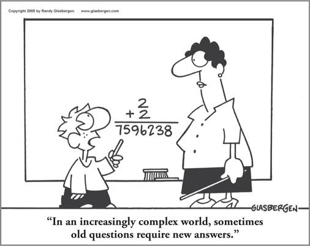

Perhaps you’ve found yourself in a situation where you’ve been stuck, frustrated, out of ideas, caught off guard by change, struggling with communication, or challenged by dealing with “difficult” team members, colleagues, or customers.
Or maybe you’ve wondered:
How do I get my team to be more productive?
How do I grow as a leader in a rapidly changing environment?
What’s blocking my organization from implementing the changes we need?
Why is it that we have all the right people and pieces in place, but we just can’t seem to get the results we want?
Why isn’t my organization more innovative and creative?
What you may not realize is that these kinds of issues often have a common root cause: thinking. And that’s why the skill of Whole Brain Thinking, which you’ll learn in this book, has become so important.
With the complexity of today’s business environment, you and your organization can’t afford to be held up by communication breakdowns, poorly functioning teams, or leaders who don’t have the necessary vision and agility to cut through the chaos and get results. You can’t compete successfully if you’re being consistently outpaced by change or stuck in a rut of lackluster ideas. And you certainly can’t afford to waste time, talent, and resources.
The challenges are daunting, but this book will show you that the answers are all available to you, waiting to be unleashed. It all starts with thinking.
Every business runs on thinking. The purpose of this book is to provide you with a better understanding of how thinking affects your results and the tools you need to improve them, whether you’re an individual contributor or leading a team, or whether you’re in a small to midsize business or a large global organization. We don’t always know how others think, but this book will help you understand the implications of different thinking preferences (including your own) and then show you easy ways to build up your thinking agility so that you can work more effectively with others who think differently and leverage the best thinking around you to avoid costly delays, missed opportunities, and other business risks.
But more than that, you’ll rediscover the full power and potential of your own thinking. This book will show you not only how to fully capitalize on your thinking, but also how to break out of your mental defaults so that you can reach new levels of success. In a complex world, that mental dexterity has never been more critical.
In a sense, many individuals and organizations have been taking the long way to results because they haven’t adapted their thinking to today’s realities. This book will put you on the fast track. As one executive remarked, “If only I had known this years ago. It would have saved me so much time and frustration!”
No matter what your goals are, getting smarter about your thinking will help you reach them faster, more efficiently, and more effectively. This book will help you understand that it’s not just what you think, it’s how you think that makes a difference. It will open up your eyes to the full “brain trust” that’s available to you and show you how to tap into it and expand your own thinking capacity to optimize what you’re doing, get more creative, get more efficient, and get better results.
There has been an explosion of information about the brain and business since the first edition of this book was published. But in the midst of all this information—from the plethora of studies and books to the emergence of new “neuro” application fields to the significant research headlines that we read and hear about daily—there remains a need for real-world, how-does-this-apply-and-how-can-I-use-it-to-get-results practicality that is often missing from the more academic discussions and advice. This book keeps the subject down to earth, relevant, and actionable. You won’t be reading about complex theories or vague philosophies; you’ll be learning practical, proven models and techniques and workable solutions to optimize your performance and improve your business.
The Whole Brain Business Book explores the core business issues that organizations in every industry and of every size and geographic scope are dealing with today. It’s divided into sections that answer the following questions:
1. How does my thinking affect my performance, and how can I become more of a Whole Brain thinker?
2. How do I use my whole brain to better harness cognitive diversity: to manage, lead, collaborate with, communicate with, align, and influence people with different thinking preferences?
3. How can I be more agile, strategic, and effective as a leader in today’s complex world, and what can I learn from how CEOs think?
4. In an actionable, practical sense, how do I unleash creative and strategic thinking to drive innovation at an individual, team, and organizational level?
5. What steps can I take to continue to learn, grow, evolve, and develop my thinking?
You can read the chapters in sequence to get the full view, or you can dive into a specific chapter or section that focuses on a burning challenge that you’re currently facing. Along with a multitude of real-life examples from companies, products, and people that you will immediately recognize, you’ll get specific techniques you can use to strategically focus your organization’s thinking directly on your key business challenges, or to expand your own thinking skills in individual performance areas. Each chapter concludes with a snapshot summary of key points along with next-step tips to help you put the concepts into action.
This edition of Ned Herrmann’s groundbreaking book on the application of Whole Brain Thinking to business is rich with anecdotes from Ned’s remarkable journey from management development at General Electric to pioneering researcher, author, and thought leader in the field.
Ned Herrmann died in 1999, but his legacy continues. The concepts, foundation, and spirit of the original edition, including Ned’s unique voice, remain, augmented with up-to-date cases, new applications, and new business issues that have emerged over the past several decades. Examples of the payoffs of Whole Brain Thinking are abundant in the business press, and the benefits have been applied successfully in the world of academia as well. Colleges and universities like Wharton, Stanford, and MIT are using these concepts in engineering, executive education, MBA programs, and a variety of innovative programs. In corporate learning and development, an entire discipline of Whole Brain application, design, and delivery continues to grow in nine out of ten of the Fortune 100 and a wide range of small and midsize organizations across the globe. This fully updated book builds on the now decades of concrete examples provided by the team that is carrying on the work today, led by Ned’s daughter, Ann Herrmann-Nehdi, and recently joined by his grandson, Karim Nehdi. The result is proven tools that you can put to use immediately, without needing a PhD in neuroscience.
Around the world, thousands of professionals are applying Whole Brain Thinking across a wide range of applications, from the classroom to the boardroom. Every day, they are proving Ned’s conviction: with better thinking comes better results.
It’s your brain—learn to use it better than you ever have!